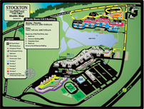
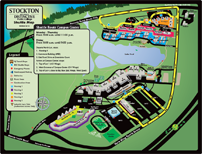

On Campus Shuttle Operates During Fall &
Spring Semesters Only
Limited Service on Preceptor Advising
Days
Questions or Concerns? Call
609.652.4415
For ADA Arrangements Call
Robert Ross,
609.652.4988
|
A&S
Route |
|
 |
Campus
Center Route
|

|